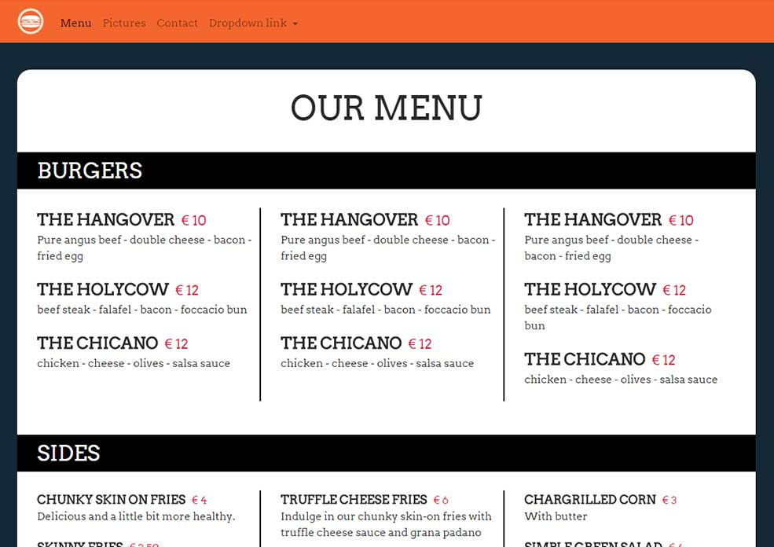

Portfolio
Assignment 01

Project: Basic HTML Page
Description: A basic HTML example page, including the following elements: h1, p, hyperlinks and images.
Check it out on GitHub
Assignment 02

Project: CSS Styling
Description: Basic CSS styling example using: id's, classes, colors and html elements.
Check it out on GitHub
Assignment 03

Project: Basic CSS layout
Description: Basic CSS layout examples, with multiple columns, floats, and element positioning.
Check it out on GitHub
Assignment 04
Project: Portfolio v01
Description: Version 01 of code portfolio site.
Check it out on GitHub
Assignment 06
Project: Js show
Description: Javascript and Jquery animation.
Check it out on GitHub
Assignment 07
Project: Coral Bleaching awareness
Description: Information site to promote awareness of coral bleaching
Check it out on GitHub
Assignment 08
Project: Javascript clock
Description: Javascript / Jquery clock with styling
Check it out on GitHub
Assignment 09
Project: Restaurant site
Description: Business site for burger restaurant
Check it out on GitHub